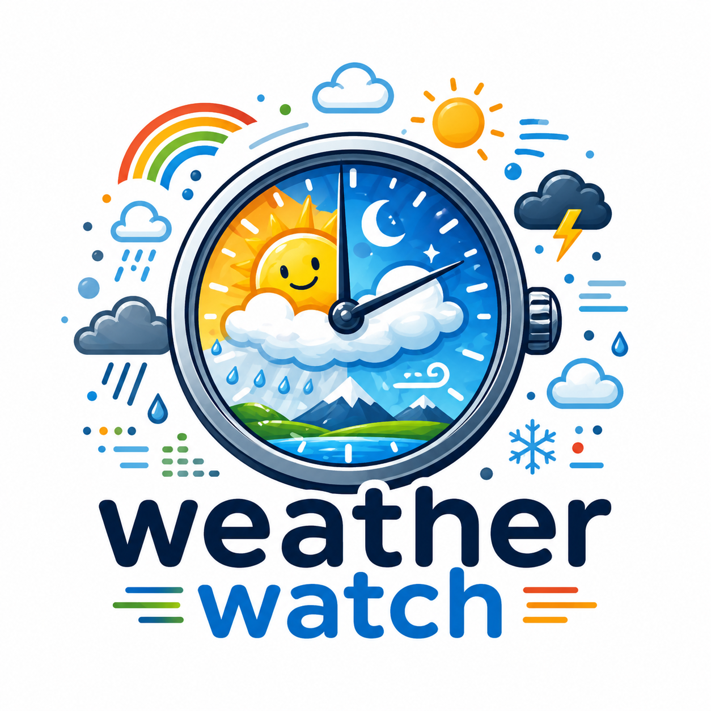

◈ SKIN
LOADING
_

WEATHER WATCH
NOW
18:21
:38
CST
--°F
--°C
---
SKY
Now
Tonight
Tomorrow
TEMP FORECAST
→
3 cycles
7 cycles
WEEKLY
→→
7-day
14-day
NOW
HERE
Chicago, IL
Miami, FL
San Francisco, CA
New York, NY
London, UK
Paris, France
Tokyo, Japan
Sydney, Australia
Nairobi, Kenya
--°N --°W
—
—